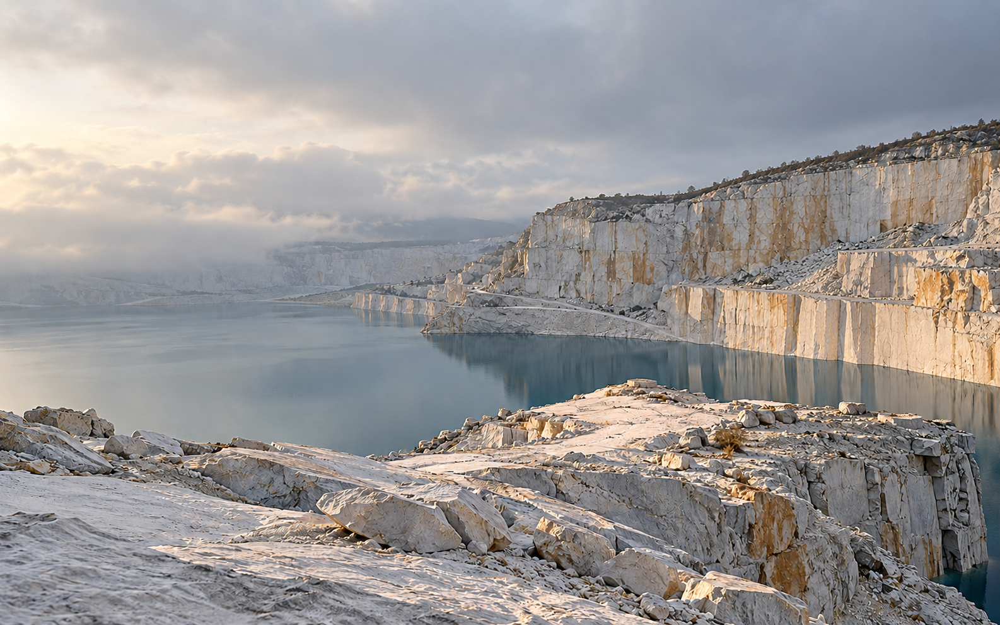

Пешие экспедиции к тихой воде,
каменным берегам и новым точкам зрения.
ПОЧЕМУ МЫ ИДЁМ
БОЛЬШЕ МЕСТА
ДЛЯ ВНИМАНИЯ.
За поворотом привычной дороги бывает целый новый мир. Мы собираем короткие маршруты, в которых есть время рассмотреть камень, услышать воду и задержаться у красивого вида.
Выберите место и темп. Остальное пространство оставим прогулке.
Найти свой маршрутСВОЙ ТЕМПВНИМАНИЕ К МЕСТУПЛАН ПОД РУКОЙ
ПОЛЕВАЯ КОЛЛЕКЦИЯ
КУДА ПОЙДЁМ?
Два места. Два характера.
Выберите, что вам ближе сегодня.
Каменный берегПЛАН / 01
Схемы и маршруты придуманы для этого концепта.
Используйте их как пример интерфейса, а не для навигации.
СЛЕДУЮЩАЯ ТОЧКА
СНАЧАЛА
ОДИН ШАГ.
Выберите место и удобный темп.
Сохраните план, чтобы вернуться к нему позже.